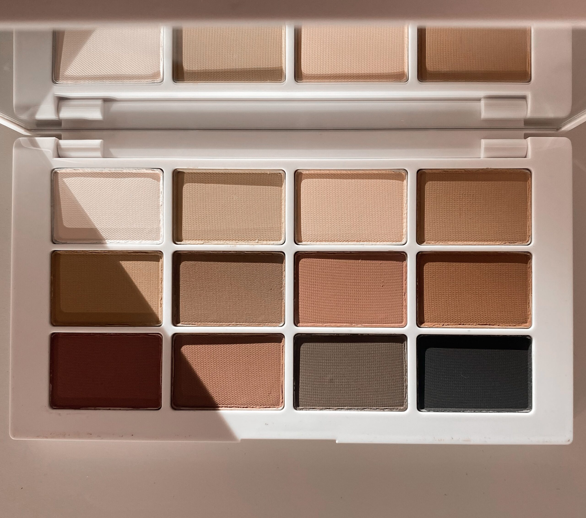
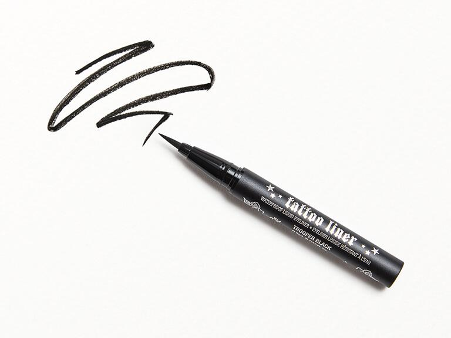
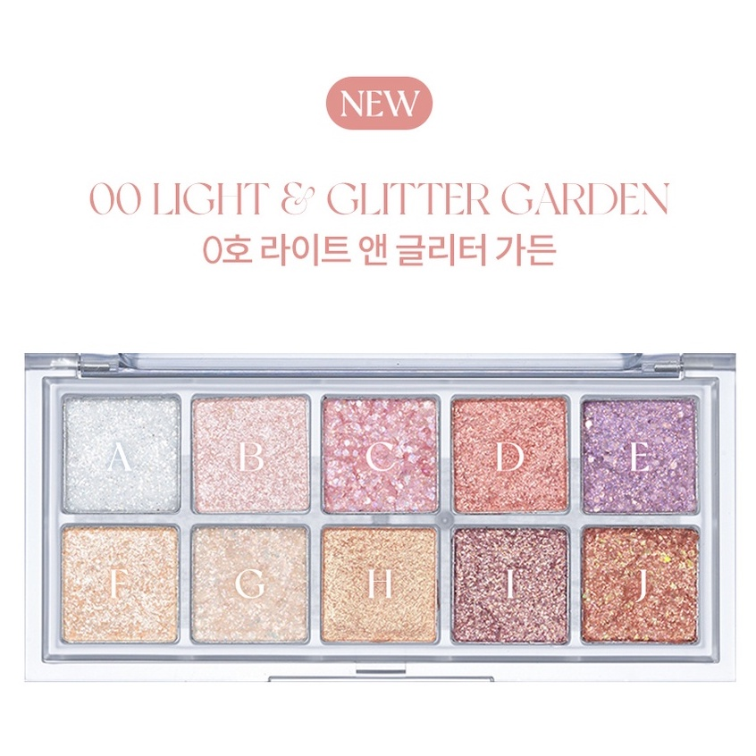
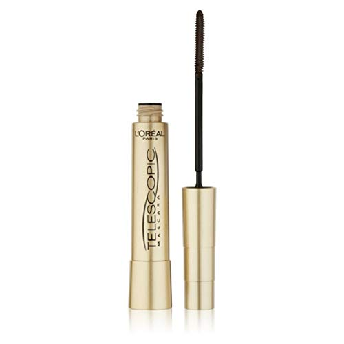
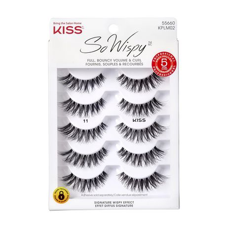

 Eyeshadow is like the base of most eye makeup. Often in a powder form, it coats the eyelids in a large spectrum of colours. Buying an eyeshadow palette is a good investment. Eyeshadow can be used anywhere on the face. As a blush, contour, or other uses. Bold or natural, you can do it all with eyeshadow.
 Eyeliner is used generally on the outer corner of the eye. The way one uses it can change the overall entire face's look. Long, sharp eyeliner can create a longer eyeshape. Short, small, and winged eyeliner can give sense of innocence, cuteness, and is suitable for more natural makeup.
 Eye glitters layer over eyeshadow but can be worn on its own. Due to its shiny nature, it draws a lot of attention to the eyes. Although lesser seen in the western makeup community, it is very common in asian beauty. Asian beauty focuses around the eyes a lot so using bright eye glitters can balance the look.
 Mascara is formulated to coat around each eyelash. There are many different types of mascara. Some are made to make your eyelashes look longer, some give your eyelashes volume as if you have a lot more eyelashes, and many more. Generally coming in colours of black and brown, these make your eyelashes darker and enhance the eyes.
 If mascara isnt enough, some people use fake eyelashes if they feel they want their lashes to look even longer. Wearing fake eyelashes draws even more attention to the eyes. The come in all sorts of colours, shapes, and lengths. Some can be natural looking, and some are very bold.